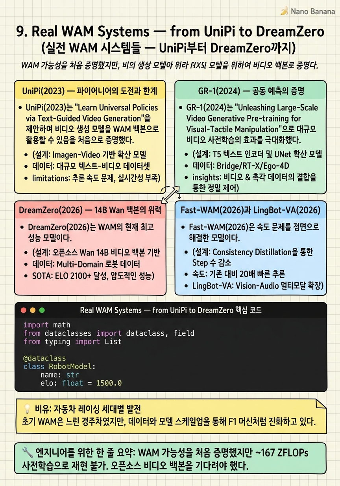

Real WAM Systems — from UniPi to DreamZero

🎯 학습 목표
- UniPi가 2023년에 재현 불가능했던 이유를 설명할 수 있다
- GR-1의 설계 선택(공동 예측 + 기본 토큰 + 계층적)을 설명할 수 있다
- DreamZero가 RoboArena 1위를 달성한 핵심 요인을 이해한다
- Fast-WAM의 속도-성능 트레이드오프를 수치로 설명할 수 있다
- RoboArena 벤치마크의 한계와 의의를 이해한다
이론을 넘어 실제 시스템으로 눈을 돌려보자. 2023년 UniPi가 WAM의 가능성을 처음 보여준 이후, 2024년 GR-1이 재현 가능한 성과를 내고, 2026년 DreamZero가 14B 파라미터로 VLA를 앞지르기까지 불과 3년 만에 급격한 발전이 있었다.
각 시스템은 챕터 6~8에서 배운 세 가지 설계 차원에서 서로 다른 선택을 했다. 이 챕터에서는 각 시스템의 설계 결정, 학습 파이프라인, 실제 성능을 구체적으로 살펴보고, RoboArena 벤치마크에서의 결과를 해석한다.
핵심 내용
UniPi(2023) — 파이어니어의 도전과 한계
UniPi(2023)는 "Learn Universal Policies via Text-Guided Video Generation"이라는 제목처럼, 텍스트 조건부 비디오 생성으로 로봇 행동을 학습하는 첫 시도다.
설계 선택: - 패러다임: 역동역학 (비디오 생성 → IDM) - 비디오 백본: CNN 기반 확산 모델 (당시 DiT가 없었음) - 아키텍처: 계층적
결과는 고무적이었다 — 언어 조건부 비디오를 생성하고 그로부터 행동을 추출할 수 있다는 개념 증명에 성공했다.
하지만 치명적인 문제가 있었다: CNN 기반 비디오 확산 모델의 사전학습 비용이 ~167 ZFLOPs였다. 이는 대형 언어 모델 학습과 비슷한 규모로, 소수의 대형 기관만 재현할 수 있었다. 연구 커뮤니티의 재현성과 반복 실험이 막혔다. 이것이 오픈소스 DiT 기반 비디오 모델의 등장을 기다려야 했던 이유다.
GR-1(2024) — 공동 예측의 증명
GR-1(2024)는 "Unleashing Large-Scale Video Generative Pre-training for Visual Robot Manipulation"으로, GPT-2 크기의 인과적 Transformer로 비디오와 행동을 공동 예측한다.
설계 선택: - 패러다임: 공동 예측 - 액션 통합: 기본 행동 토큰 - 아키텍처: 계층적 (비디오 GPT + 행동 헤드) - 사전학습: 대규모 인터넷 비디오 → 로봇 데이터 파인튜닝
GR-1의 핵심 기여는 재현 가능성이다. GPT-2 수준의 모델로 비디오 사전학습이 로봇 조작에 실제로 도움이 된다는 것을 소규모 기관도 검증할 수 있게 했다.
성과: LIBERO, CALVIN 벤치마크에서 당시 최고 성능. 특히 새로운 환경으로의 일반화에서 VLA 대비 강점을 보였다. 이 결과가 WAM 패러다임에 대한 연구 투자를 가속시켰다.

DreamZero(2026) — 14B Wan 백본의 위력
DreamZero(2026)는 WAM의 현재 최고 성능 모델이다.
설계 선택: - 패러다임: 공동 예측 - 비디오 백본: Wan 14B (Alibaba 오픈소스) - 액션 통합: 기본 행동 토큰 + 단일 공동 확산 - 아키텍처: 단일 (Monolithic) — 하나의 Transformer가 비디오와 행동을 동시 노이즈 제거 - 학습 비용: 행동 파인튜닝만 ~9 ZFLOPs (Wan 사전학습 활용)
RoboArena 점수: 1750 (2026년 4월 기준 1위)
비교: Pi-0.5(VLA) 1622, Fast-WAM ~1600대.
단일 아키텍처에서 비디오와 행동이 공동으로 노이즈 제거되므로, 두 모달리티의 일관성이 매우 높다. Wan 14B의 강력한 물리 이해가 로봇 조작에 효과적으로 전이됐다는 평가다.
한계: 추론 시간 ~600ms. 빠른 조작 작업에서는 Pi-0.5의 ~190ms 대비 불리하다.
Fast-WAM(2026)과 LingBot-VA(2026)
Fast-WAM(2026)은 속도 문제를 정면으로 해결한 모델이다.
설계: - 패러다임: 표현 전용 (추론 시 비디오 생성 없음) - 백본: Wan 기반 인코더 - 아키텍처: 단일 (비디오 인코더 + 플로우 매칭 행동 헤드)
추론 속도: Full WAM 대비 3~4배 빠름 (~190ms). VLA와 비슷한 속도를 내면서도 비디오 사전학습의 지식을 인코더 형태로 활용한다. RoboArena 점수는 Full WAM 대비 약간 낮지만, 빠른 반응이 필요한 작업에서 경쟁력이 있다.
LingBot-VA(2026)는 크로스-에뮬레이션 사전학습에 집중한 모델이다. Wan 2.2-5B를 백본으로 16,000 시간의 다양한 로봇 에피소드로 사전학습한다. 다양한 로봇 형태에서 수집된 이 방대한 데이터가 범용 로봇 행동의 기반이 된다.
모델 비교 정리:
| 모델 | 연도 | 패러다임 | 아키텍처 | RoboArena | 추론속도 |
|---|---|---|---|---|---|
| UniPi | 2023 | 역동역학 | 계층적 | N/A | 느림 |
| GR-1 | 2024 | 공동 예측 | 계층적 | N/A | 중간 |
| DreamZero | 2026 | 공동 예측 | 단일 | 1750 | ~600ms |
| Fast-WAM | 2026 | 표현 전용 | 단일 | ~1600 | ~190ms |
| LingBot-VA | 2026 | 공동 예측 | 계층적 | - | 중간 |

RoboArena 벤치마크 읽는 법
RoboArena는 실제 로봇 작업에서 모델을 비교하는 ELO 기반 리더보드다. 체스 ELO처럼 두 모델이 직접 비교되어 점수가 결정된다.
장점: 실제 하드웨어에서 평가하므로 "벤치마킹(benchmaxxing)" — 합성 데이터나 쉬운 시나리오에 과적합하는 것 — 이 어렵다.
하지만 NVIDIA 아티클의 저자는 중요한 경고를 한다:
"One benchmark comparison is not definitive proof of WAM superiority."
실용적 함의: - DreamZero(1750)와 Pi-0.5(1622)의 차이는 통계적으로 유의미한가? - 평가 작업 세트가 WAM에 유리한 장기 계획 작업에 편향되어 있지 않은가? - RoboLab과 MolmoSpaces가 더 나은 대안으로 언급된다 — LIBERO나 CALVIN보다 어려운 일반화를 요구한다.
결론: RoboArena에서 WAM이 앞서고 있지만, 이것이 모든 실제 배포 상황에서 WAM이 낫다는 의미는 아니다.
💡 비유로 이해하기
WAM의 발전을 자동차 레이싱 기술의 세대별 진화로 비유해보자.
UniPi(2023) = F1의 첫 세대 터보 엔진: 혁신적인 아이디어였지만 너무 비싸고 복잡해서 소수 팀만 쓸 수 있었다. 신뢰성도 불안정했다. 하지만 "터보가 작동한다"는 것을 증명했다.
GR-1(2024) = 터보 엔진의 대중화: 신뢰성과 비용 효율을 높여 더 많은 팀이 쓸 수 있게 됐다. 최고 속도는 아니지만 레이스에서 충분히 경쟁한다.
DreamZero(2026) = 하이브리드 파워트레인: 거대한 전기 모터(14B Wan 백본)와 정밀한 내연 기관(행동 헤드)을 통합해 역대 최고 기록을 세웠다. 하지만 무겁고 비싸다.
Fast-WAM(2026) = 경량 하이브리드: DreamZero와 같은 파워트레인 기술을 쓰되, 무게를 줄여 일상 레이스에 적합하게 만들었다.
💻 코드 예시
RoboArena 스타일의 ELO 기반 모델 비교 시스템을 간단히 구현해보자.
import math
from dataclasses import dataclass, field
from typing import List
@dataclass
class RobotModel:
name: str
elo: float = 1500.0
wins: int = 0
losses: int = 0
def expected_score(elo_a: float, elo_b: float) -> float:
"""ELO 기대 점수: 1 = 승, 0 = 패, 0.5 = 무"""
return 1 / (1 + 10 ** ((elo_b - elo_a) / 400))
def update_elo(model_a: RobotModel, model_b: RobotModel,
result: float, K: int = 32):
"""
result: 1.0 = A 승리, 0.0 = B 승리, 0.5 = 무
"""
ea = expected_score(model_a.elo, model_b.elo)
eb = 1 - ea
model_a.elo += K * (result - ea)
model_b.elo += K * ((1 - result) - eb)
if result == 1.0:
model_a.wins += 1
model_b.losses += 1
elif result == 0.0:
model_a.losses += 1
model_b.wins += 1
# RoboArena 2026년 4월 시뮬레이션
models = {
'DreamZero': RobotModel('DreamZero', elo=1750),
'Pi-0.5': RobotModel('Pi-0.5', elo=1622),
'Fast-WAM': RobotModel('Fast-WAM', elo=1605),
'LingBot-VA': RobotModel('LingBot-VA', elo=1580),
}
# 현재 ELO 기반 다음 매치업 예측
print('=== RoboArena 현재 순위 ===')
for name, m in sorted(models.items(), key=lambda x: -x[1].elo):
print(f'{name:15s}: ELO {m.elo:.0f}')
# DreamZero vs Pi-0.5 다음 매치 승률 예측
ea = expected_score(models['DreamZero'].elo, models['Pi-0.5'].elo)
print(f'\nDreamZero vs Pi-0.5 다음 매치')
print(f'DreamZero 예상 승률: {ea:.1%}')
print(f'차이: {models["DreamZero"].elo - models["Pi-0.5"].elo:.0f} ELO')ELO 시스템의 핵심은 expected_score()다. 400점 차이가 10배의 승률 차이에 해당한다. DreamZero(1750) vs Pi-0.5(1622)의 128점 차이는 약 68% 승률로 계산된다 — 결코 압도적이지 않다. 이것이 NVIDIA 아티클이 "하나의 벤치마크가 결정적 증거가 아니다"라고 강조하는 이유다.
🏭 현업에서의 평가
✅ 시니어가 보는 것
- 각 모델의 학습 파이프라인(사전학습 → 파인튜닝)을 설명할 수 있는가
- DreamZero의 공동 확산 노이즈 제거가 구체적으로 어떻게 동작하는지 이해하는가
- RoboArena ELO 점수의 통계적 의미와 한계를 알고 있는가
⚠️ 레드 플래그
- DreamZero의 성능이 Wan 백본 덕분만이 아니라 단일 아키텍처의 공동 학습도 기여한다는 것을 모르는 것
- RoboArena를 절대적 기준으로 보는 것 — 작업 세트 편향 가능성을 인식해야 한다
🎤 예상 인터뷰 질문
- DreamZero를 우리 회사의 특정 로봇 플랫폼에 적용하려면 어떤 파인튜닝 전략이 필요할까요?
- Fast-WAM이 DreamZero보다 낮은 RoboArena 점수를 받았지만 프로덕션에서 선호될 수 있는 이유는 무엇인가요?
- UniPi가 2023년에 재현 불가능했던 것처럼, DreamZero가 현재 소규모 팀에게 재현 어려운 이유는 무엇인가요?
✨ 핵심 요약
UniPi의 의의
WAM 가능성을 처음 증명했지만 ~167 ZFLOPs 사전학습으로 재현 불가. 오픈소스 비디오 백본을 기다려야 했다.
GR-1의 기여
재현 가능한 WAM 성과. 비디오 사전학습이 로봇 일반화에 실제로 도움됨을 소규모 기관이 검증 가능하게 했다.
DreamZero = 현재 WAM 최강
Wan 14B + 단일 공동 확산으로 RoboArena 1750. 하지만 600ms 추론 지연이 약점.
Fast-WAM = 실용적 타협
비디오 생성 스킵으로 ~190ms 달성. 빠른 작업에서 경쟁력.
ELO 점수의 한계
128점 차이(DreamZero vs Pi-0.5)는 약 68% 승률 — 결정적 우위가 아니다.